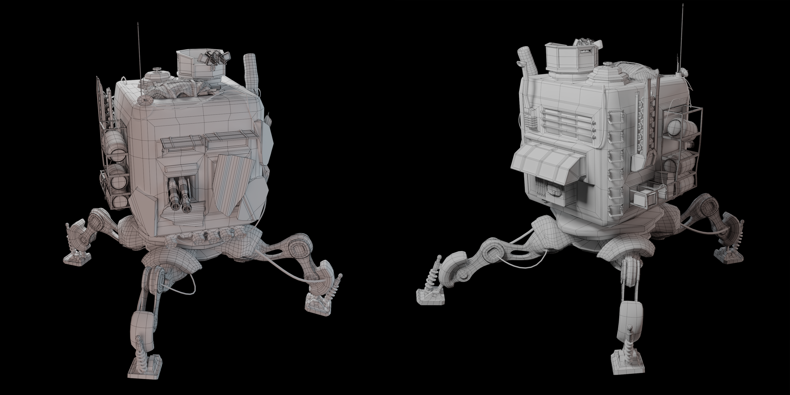
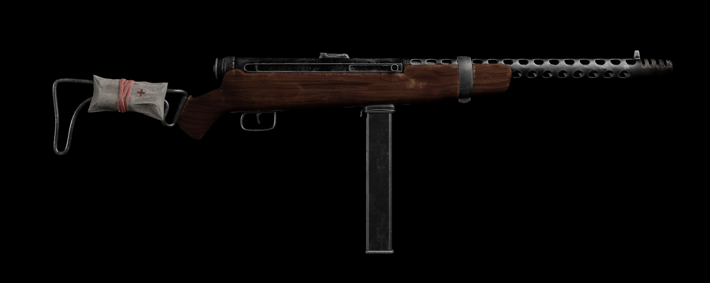
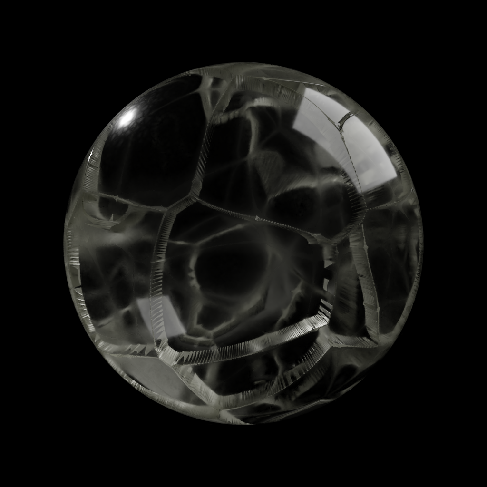
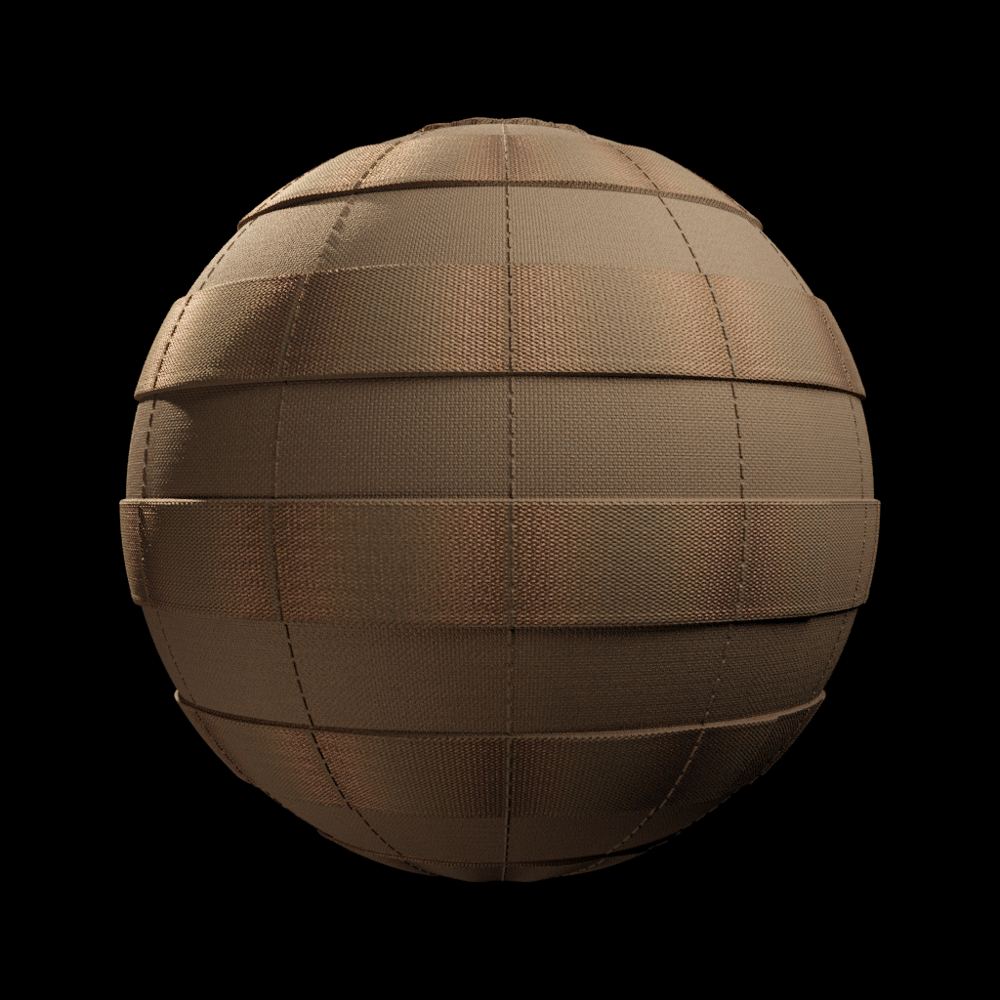
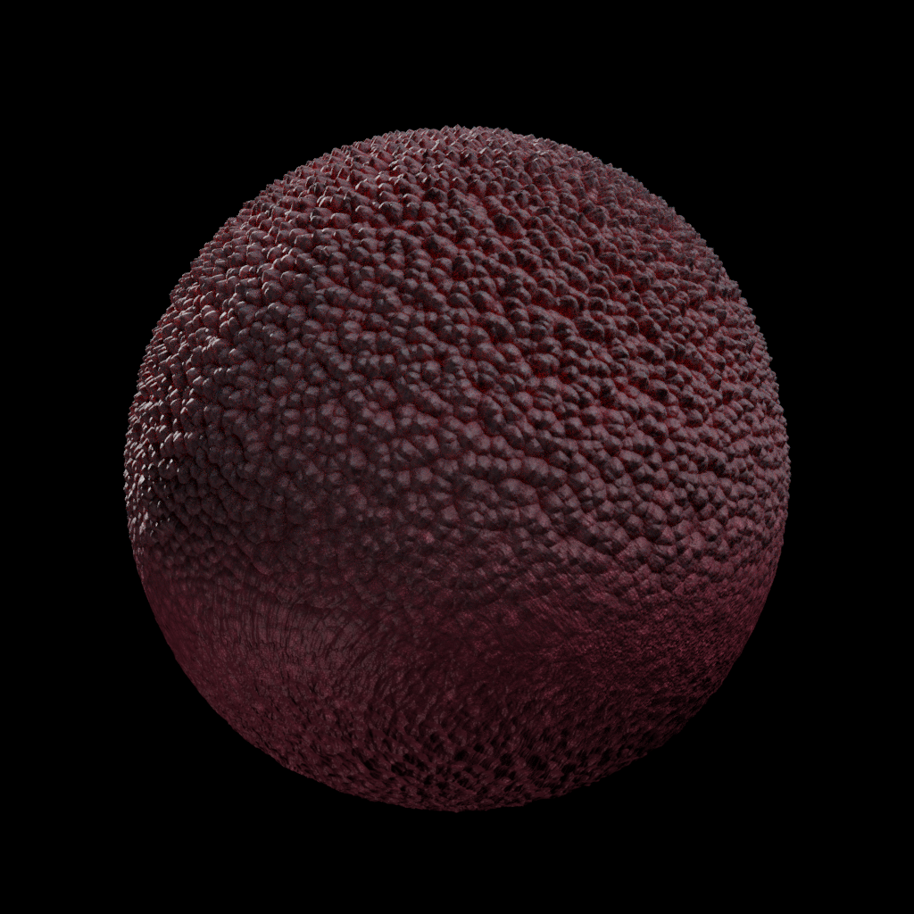
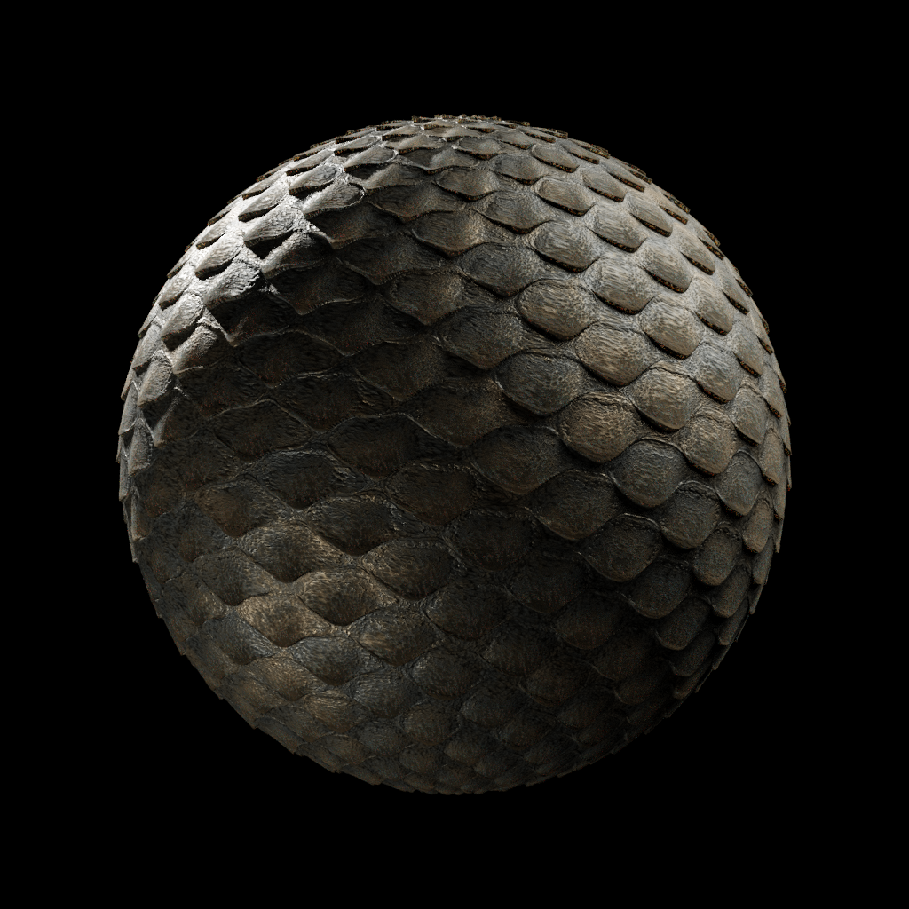
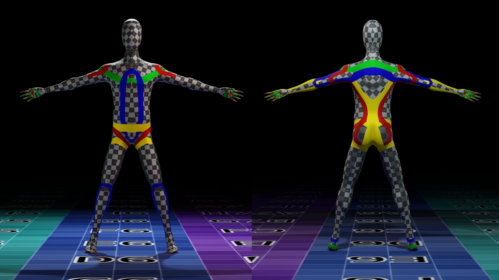

3D Portfolio
3D Modeling, Rendering & Animation — Academic Projects (MSc, 2019–2022)
Work produced during the MSc in Cinema and Multimedia Engineering at Politecnico di Torino. Tools: Blender, Substance Painter, Mixamo. Included as evidence of foundational 3D skills underlying current XR and simulation research.
Renders


Hard Surface Modeling




Procedural Materials





VR Avatar Topology
Topology study for a VR-ready avatar — clean edge-flow optimized for deformation and real-time rendering budgets.

Computer Animation — Class Project
3D Printed Commercial (fictitious product)
Computer Animation course, Politecnico di Torino
2020
Short animated commercial for a fictitious 3D-printed product. Role: character modeling, character animation, photography direction.
Hard surface & Char. Anim.
Marco Ruffa
Marco Ruffa
Char. Anim. & Physics
Beatrice Gemmi
Beatrice Gemmi
Char. Modeling, Anim. & Photo
Leonardo Vezzani
Leonardo Vezzani
Music
Michele Fantoni
Michele Fantoni
Blender
Character animation
Physics simulation
PoliTo coursework